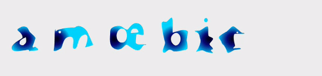

Part of Tiny Fun Font series - limited character set font for havig fun with color and/or variable font technology using free open source tools.
Here each character can degenrate into an identical amœba at SHAPE axis value of zero, OR takes shape of a full fledged letter form on reaching SHAPE axis value of 100.

Download amoebic version 0.0011